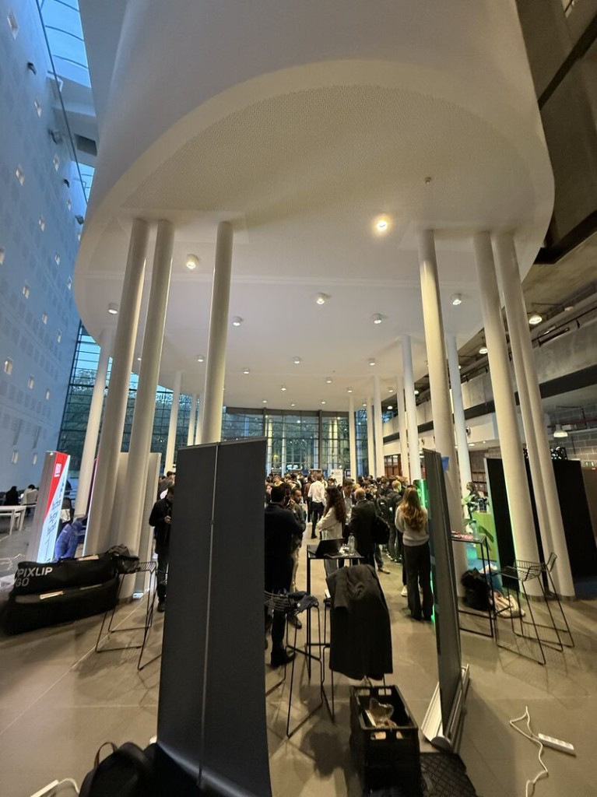

Tech & Cyber Job Fair

Main hall during the fair — busy networking between sessions.
I had a great time last Thursday at the Tech & Cyber Job Fair. Big thanks to ECSO, Road2Cyber, and Solvay Brussels School for putting together an approachable, well-run event. It set a strong tone for the year ahead: professional contacts, clear career signals, and room to explore cybersecurity without feeling lost in jargon.
Event context
The fair brought together students, graduates, and employers around tech and cyber roles. It was not a single long keynote but a trade-fair style afternoon: stands, informal conversations, and targeted sessions. The target audience was clearly people entering or repositioning in IT security and related fields — from curious students to recruiters and training providers. The venue (Solvay Brussels School) worked well: open space, easy to move between booths, and enough quiet corners to actually talk.
ISC2 session — Bolivar Pereira
The highlight for me was Bolivar Pereira’s ISC2 session on certifications and early career steps. ISC2 is known for credentials such as the CC and CISSP pathway; hearing how those fit (or do not fit) right after study was more practical than reading forum threads online. Bolivar framed certifications as tools for structure and credibility, not as a substitute for hands-on learning — which matches how I already think about my degree: build foundations first, then prove focus with certs where they matter to employers.
Useful takeaways: start with clarity on which role you want (SOC, GRC, pentest, cloud security, etc.), pick certs that employers in that lane actually mention, and pair every cert goal with a small project or lab so you can explain what you did, not only what you passed. For someone still in applied computer science, that was reassuring — I do not need every badge on the market on day one.
Technical level & link to my studies
The fair mixed high-level career advice with concrete cyber hiring needs. The ISC2 talk was moderately technical in vocabulary but focused on career design rather than exploits or code. I have touched security topics in class, but this event connected them to hiring reality: which skills recruiters scan for, how networking at fairs differs from sending CVs online, and why showing curiosity in person still matters.
What I learned & would I go again?
I left feeling inspired to keep learning and growing in the field — not hype, but a clearer picture of next steps (labs, cert roadmap, LinkedIn presence, following ECSO/Road2Cyber activities). A “negative” note would only be that time flies: one afternoon is not enough to speak to everyone worth meeting, so I should prepare a short intro and two questions before the next fair.
I would definitely attend again and recommend it to classmates interested in cybersecurity or unsure how entry-level hiring works in Belgium. Organisers could add even more short structured Q&A slots after talks so lines at stands stay shorter — small improvement on an already strong format.